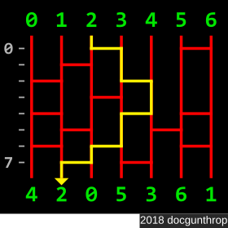

Amidakuji
Points: 6 kyu
Kata ID: 5af4119888214326b4000019
Amidakuji is a method of lottery designed to create random pairings between two sets comprised of an equal number of elements.
Your task is to write a function amidakuji that returns the final positions of each element. Note that the elements are an ascending sequence of consecutive integers starting with 0 (from left to right).
Input
Your function will receive an array/list of equal-length strings consisting of 0 and 1 characters; this represents the "ladder" structure. The 1s represent the rungs of the ladder and the 0s represent empty space.
Each element begins at the top of its corresponding vertical rail, as illustrated in the diagram below.
During the descent of the ladder, whenever a vertical rail intersects a horizontal rung, it swaps values with the adjacent connecting vertical rail.
Output
Your function should return an array of integers, with each integer in its final position.
Test Example
The diagram above is a visual representation of the test example below. The yellow highlighted path shows the path taken by the 2 value. Each time it encounters a crosspiece, it shifts position.
let ladder = [
'001001',
'010000',
'100100',
'001000',
'100101',
'010010',
'101001',
'010100'
];
amidakuji(ladder); // [4, 2, 0, 5, 3, 6, 1]
Other Technical Details
- A function
visualizeris preloaded to help illustrate the structure of the ladder; you can call this function with test inputs - No two rungs will ever be adjacent (so there is no ambiguity about directional path)
- Full Test Suite:
10fixed tests and100randomly-generated tests - Test input dimension upper bounds:
- maximum width:
20 - maximum height:
50
- maximum width:
- Inputs will always be valid
If you enjoyed this kata, be sure to check out my other katas